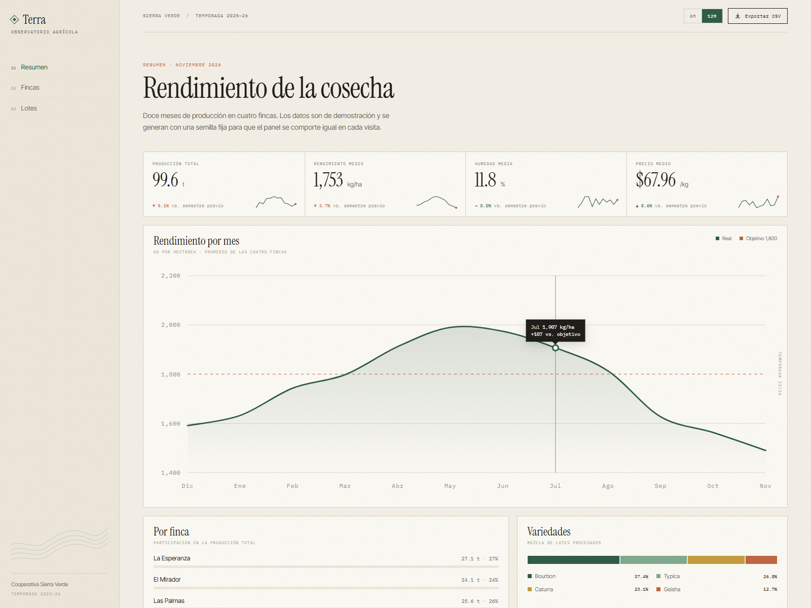
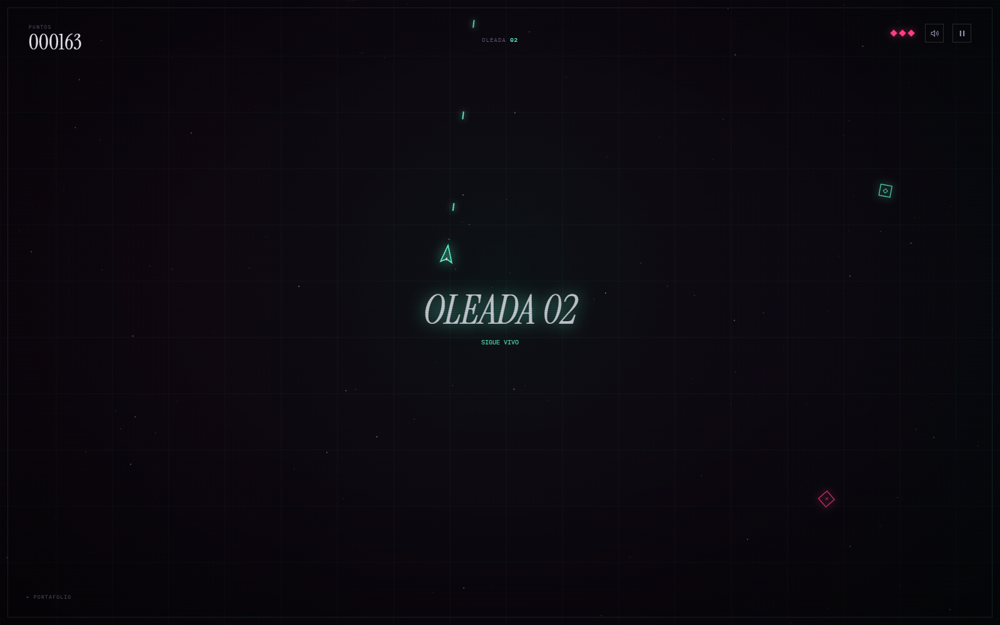
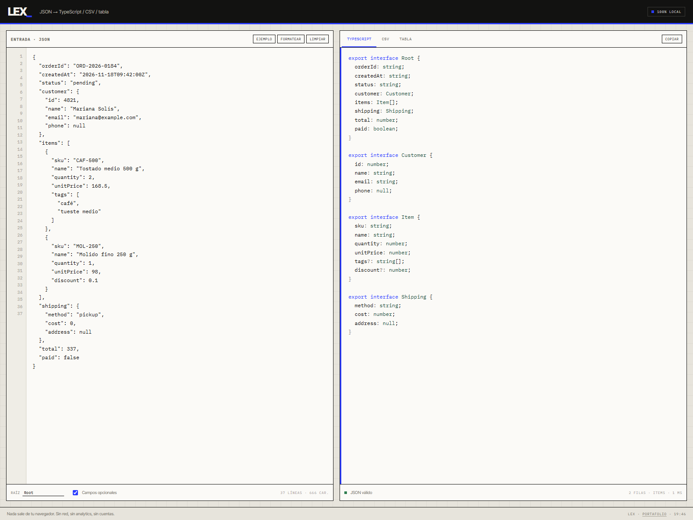
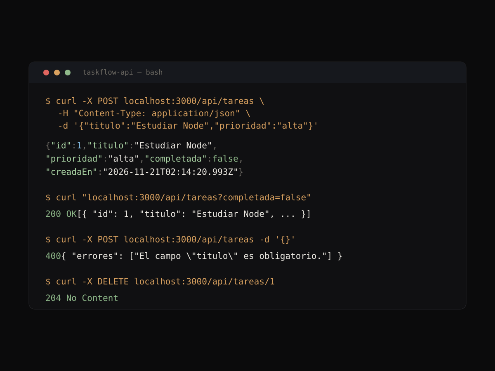
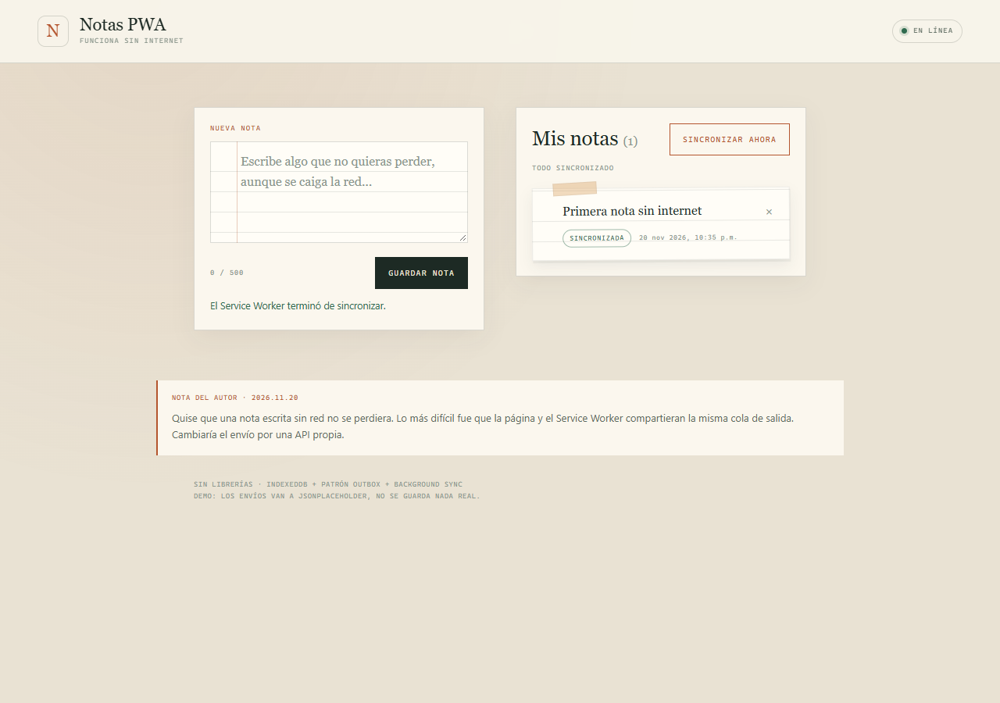
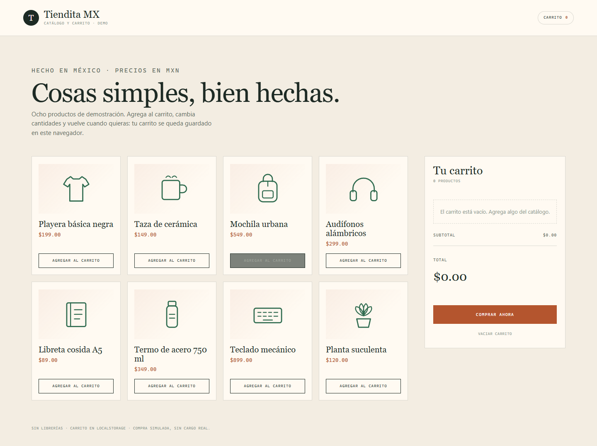
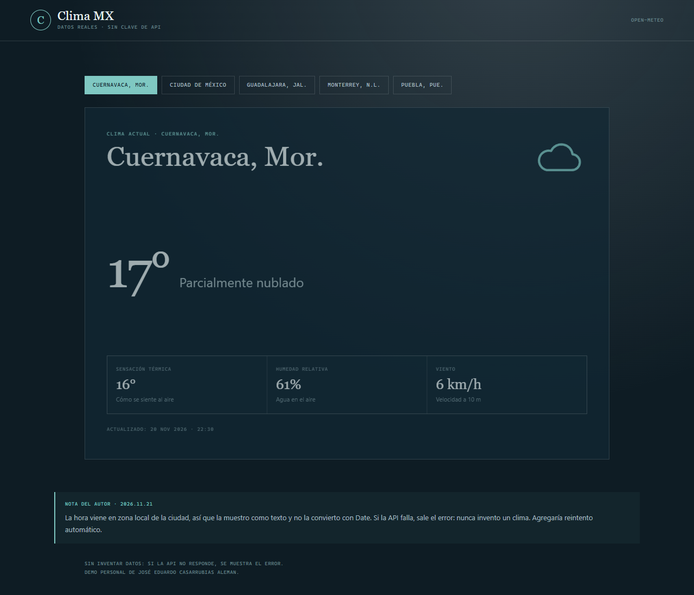
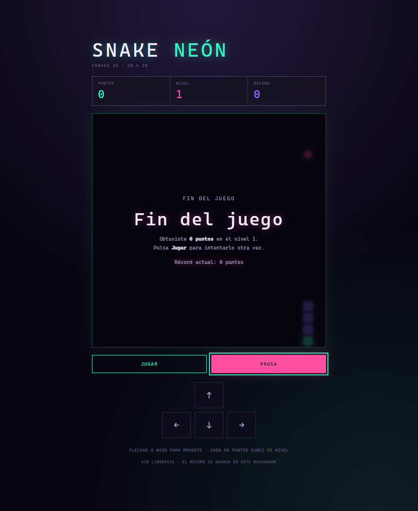

Primero el problema
Antes de elegir herramienta, escribo qué tiene que pasar y qué no puede fallar.
Disponible para estadías · 2026
México
Diseño y construyo productos web y móviles. Me interesa lo que pasa cuando la red falla, el usuario tiene prisa o el dato no cabe en una tarjeta.
01 — Trabajo seleccionado
Todos con demo o caso de estudio. Nada de mockups que no existen.

Pedidos que no se pierden
PWA de pedidos para una tostaduría. La venta se guarda en IndexedDB antes de salir a la red; el Service Worker la sincroniza cuando vuelve la conexión.

Panel de rendimiento cafetalero
Dashboard para una cooperativa: series de tiempo, filtros por finca y exportación a CSV. Datos de demostración generados con una semilla fija.

Arcade de una sola pantalla
Juego endless en canvas: oleadas procedurales, partículas y sonido sintetizado. Sin assets externos; todo se dibuja en tiempo real.

JSON a TypeScript en un segundo
Herramienta para inspeccionar payloads y generar interfaces, CSV o tabla. Detecta campos opcionales y une arrays; corre completo en el navegador.
02 — Proyectos personales
Cinco proyectos con su README y sus pruebas. Se publican a medida que se terminan.

Tareas que viven en un archivo JSON
Node.js y Express con validación, filtros, códigos HTTP correctos y pruebas con node:test. Sin base de datos externa.

Notas que funcionan sin internet
IndexedDB con patrón outbox: cada nota nace pendiente y se envía con Background Sync cuando vuelve la red. La interfaz también abre sin conexión.

Carrito que recuerda lo que elegiste
Ocho productos, cantidades editables, subtotales y compra simulada con folio. El carrito se guarda en localStorage para que siga ahí al volver.

Clima real, sin inventar datos
Cinco ciudades consultadas con fetch a Open-Meteo, traducción de códigos WMO al español y estados claros de carga y error.

El clásico, dibujado en canvas
Serpiente en Canvas 2D con niveles, colisiones, teclado y botones táctiles. El récord se queda guardado en el navegador.
Bitácora de taller
Cinco proyectos hechos en orden. Aquí están las decisiones y los límites, no solo el resultado final.
03 — Sobre mí
Soy José Eduardo Casarrubias Aleman. Estudio desarrollo de software en la UTEZ y me formé haciendo proyectos completos: de la pantalla a la base de datos.
Me interesa la parte que casi nadie presume: la cola que reintenta, el estado vacío que explica, el error que no culpa al usuario. También dibujo interfaces; creo que un buen diseño se nota cuando no tienes que preguntar dónde hacer clic.
Trabajo con JavaScript y TypeScript, Dart/Flutter, C# y SQL. He entregado una PWA offline, un cliente móvil con pruebas automatizadas y prototipos jugables en Unity.
Antes de elegir herramienta, escribo qué tiene que pasar y qué no puede fallar.
Jerarquía, contraste y ritmo. Si hay que explicar dónde hacer clic, el diseño falló.
Nombres claros, estados explícitos y pruebas donde duele. Puedo explicar cada decisión.
04 — Contacto
Estoy buscando prácticas profesionales donde pueda aportar desde el primer sprint y seguir aprendiendo de gente que lleva más camino.
Escríbeme por GitHubRespondo rápido. También puedes ver el código de este sitio.